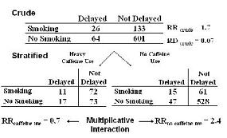
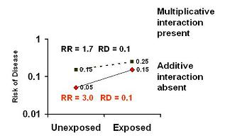
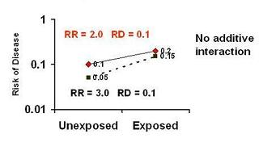
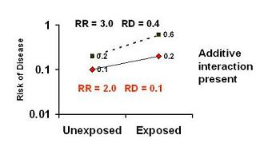
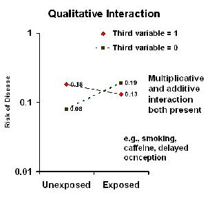

Multiplicative Interaction
Lead Author(s): Jeff Martin, MD
Definition of Multiplicative Interaction
When there is interaction in terms of the ratio measure of association, we call this multiplicative interaction.
When there is interaction in terms of the difference measure of association or the risk difference, we call it an additive interaction.
Example of Multiplicative Interaction
In the Stanton example with smoking, caffeine use, and delayed conception below
- we call this multiplicative interaction because there is interaction in terms of the measure of association or the risk ratio.

Assessment of Whether Interaction Is Present
Assessment of whether interaction is present depends upon the measure of association:
(1) Ratio measures ( multiplicative interaction)
(2) Difference measures (additive interaction)
So, when talking about interaction, we have to be precise about whether we are talking about interaction of ratio measures (i.e., multiplicative interaction) or interaction of differences measures (i.e., additive interaction) or both. That’s why some like to call this effect-measure modification, because whether or not interaction is occurring depends upon the measure of association in question.
Presence of Multiplicative Interaction - Absence of Additive Interaction
Absence of additive interaction (when an effect is truly present)
- implies presence of multiplicative interaction as seen in the graph below.

Here, the risk difference is 0.1 in both strata of the third variable.
The risk ratio differs between strata (1.7 and 3.0) -- multiplicative interaction is present.
Presence of Multiplicative Interaction - May Have Additive Interaction
The presence of multiplicative interaction may or may not be accompanied by additive interaction.
- In the graph below, we see that despite the presence of multiplicative interaction, (RR 2.0 and RR 3.0)
- the risk difference is 0.1 in both strata of the third variable - ie no additive interaction.

In the graph below, there is again multiplicative interactive, (RR 3.0 and RR 2.0)
- but risk difference in one stratum is 0.1 and 0.4 in another -
- i.e., additive interaction is present.

Presence of Qualitative Multiplicative Interaction = Qualitative Additive Interaction
Presence of qualitative multiplicative interaction is always accompanied by qualitative additive interaction.

An example can be found in Stanton's Study of caffeine use, smoking, and delayed concenception.
Choosing Multiplicative Measures
Which do you want to use: mulitiplicative versus additive measures?
Multiplicative measures (e.g., risk ratio)
- Favored measure when looking for causal association (etiologic research)
- Not dependent upon background incidence of disease
In brief, multiplicative measures of association are useful for looking at causality and additive for public health impact. There’s no need to look for additive interaction if indeed the risk ratio is the right measure of association for you.